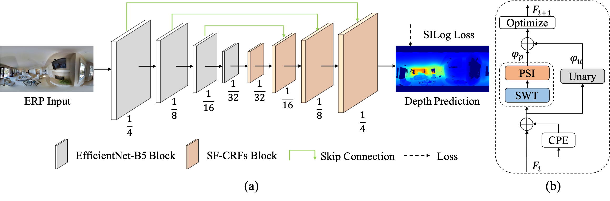
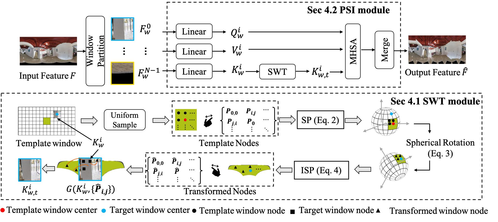
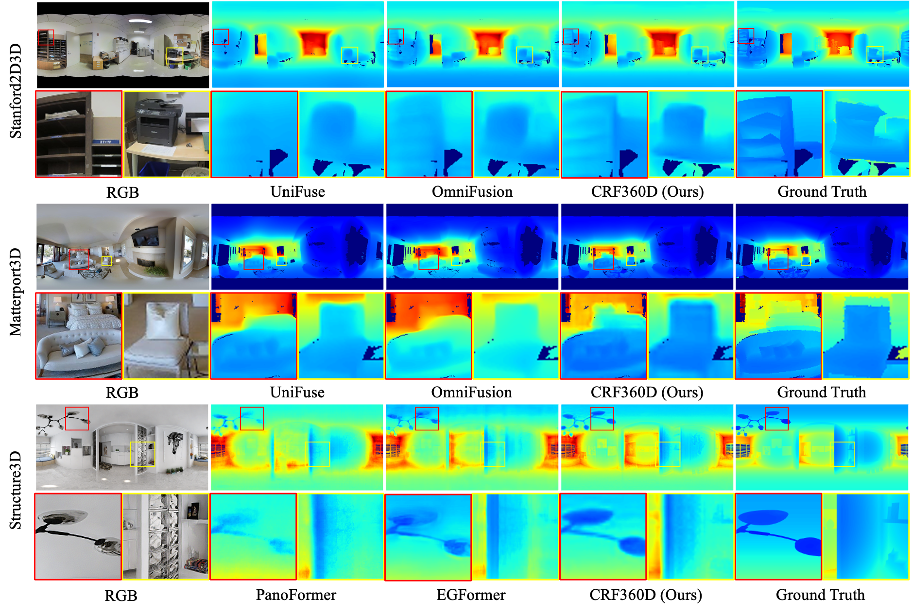

CRF360D: Monocular 360 Depth Estimation via Neural Spherical Fully-Connected CRFs
-
Zidong Cao
AI Thrust, HKUST(GZ)
-
Lin Wang
AI Thrust, HKUST(GZ)
Dept. of CSE, HKUST

News
This work is accepted by IEEE RAL. And the code and checkpoints are publicly available.
Abstract
Monocular 360 depth estimation is challenging due to the inherent distortion of the equirectangular projection (ERP). This distortion causes a problem: spherical adjacent points are separated after being projected to the ERP plane, particularly in the polar regions. To tackle this problem, recent methods calculate the spherical neighbors in the tangent domain. However, as the tangent patch and sphere only have one common point, these methods construct neighboring spherical relationships around the common point. In this paper, we propose spherical fully-connected CRFs (SF-CRFs). We begin by evenly partitioning an ERP image with regular windows, where windows at the equator involve broader spherical neighbors than those at the poles. To improve the spherical relationships, our SF-CRFs enjoy two key components. Firstly, to involve sufficient spherical neighbors, we propose a Spherical Window Transform (SWT) module. This module aims to replicate the equator window's spherical relationships to all other windows, leveraging the rotational invariance of the sphere. Remarkably, the transformation process is highly efficient, completing the transformation of all windows in a 512X1024 ERP with 0.038 seconds on CPU. Secondly, we propose a Planar-Spherical Interaction (PSI) module to facilitate the relationships between regular and transformed windows, which not only preserves the local details but also captures global structures. By building a decoder based on the SF-CRFs blocks, we propose CRF360D, a novel 360 depth estimation framework that achieves state-of-the-art performance across diverse datasets. Our CRF360D is compatible with different perspective image-trained backbones (e.g., EfficientNet), serving as the encoder.
Framework
Overall framework of our CRF360D.
SWT module and PSI module.
Illustration of the SWT module and PSI module of our proposed SF-CRFs.
Visual comparison on different methods.

BibTeX
@misc{cao2024crf360d,
title={CRF360D: Monocular 360 Depth Estimation via Spherical Fully-Connected CRFs},
author={Zidong Cao and Lin Wang},
year={2024},
eprint={2405.11564},
archivePrefix={arXiv},
primaryClass={cs.CV}
}